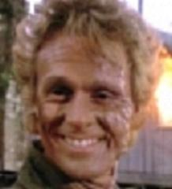

|
Navn: Murdoc |
 |
Rollen Murdoc ble spilt av den britiske skuespilleren Michael Des Barres. Murdoc er en leiemorder for den internasjonale leiemordergruppen Homicide International Trust (HIT). Han er kjent som den beste i bransjen, siden han alltid får jobben gjort uten å legge igjen spor. Men det er litt annerledes i MacGyver sin tilfelle.
Murdoc har vært med i 9 episoder av serien. Han får som oppdrag å drepe MacGyver, men dette oppdraget går ikke som planlagt. Et mislykket forsøk stoppet ikke Murdoc fra å prøve igjen . . . og igjen. Murdoc iscenesatte også sin egen død flere ganger.
I en kort periode samarbeidet Murdoc med MacGyver fordi han innså at MacGyver var den eneste som kunne hjelpe han med å redde søsteren sin. Men dette samarbeidet varte ikke lenge og Murdoc gikk tilbake til sine gamle vaner.
Det blir også vist at Murdoc har en sans for kunst og musikk. Han er for eksempel kjent for sine uvanlige kostymer og sminke. I en av Murdoc sine mest kjente episoder, «Cleo Rocks», viser han også sin talent for diktskriving:
Murder is in the air
Under the temple of
Ra
Death awaits
On the final
Curtain
Det var dette diktet som gjorde at MacGyver avslørte Murdoc i denne episoden.
Murdoc ble sist sett etter enda et mislykket forsøk på å drepe MacGyver.